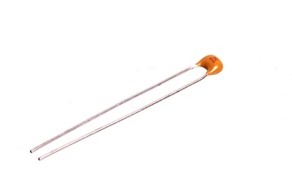
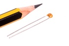
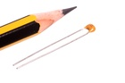

3.6 mm 100 nF Capacitor (Tantalum) 50v - CTN100

Summary
Name: 3.6 mm 100 nF Capacitor (Tantalum) 50v
ID: CAPT-36D-X-NF100-VC
Hex ID: CTN100
WebPage: https://github.com/oomlout/oomlout-OOMP/wiki/CAPT-36D-X-NF100-VC
Short URL: http://oom.lt/CTN100
Revision History: https://github.com/oomlout/oomlout-OOMP/blob/master/parts/CAPT-36D-X-NF100-VC/
| Type |
Size |
Color |
Description |
Index |
CAPT
Capacitor (Tantalum) |
36D
3.6 mm |
X
|
NF100
100 nF |
VC
50v |
Images
 

About
This part is awaiting a description.
Specifications
| Info |
Value |
| Type |
Capacitor (Tantalum) |
| Size |
3.6 mm |
| Description |
100 nF |
| Index |
50v |
| Pitch |
2.5 mm |
| Width |
4 mm |
| Height |
4 mm |
| Depth |
2.6 mm |
| Number of Pins |
2 |
| Maximum Voltage |
50 V |
| Tolerance |
10 % |
Extra Details
Spotted a mistake, want to add more? Let us know oomp@oomlout.com
All images and resources are licensed [CC BY-SA] unless otherwise stated (ie. the datasheets)